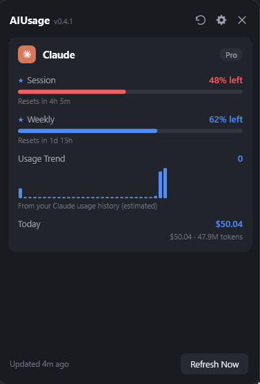

Windows tray app · Free · Open source
Know exactly how much of your AI coding plans you have left.
AIUsage.NET sits quietly in your system tray and shows session limits, weekly quotas, credits, and spend for the AI coding tools you already pay for — all in one popup, updated every five minutes.
Windows 10+ · Installer + auto-updates via Velopack · MIT License

Real screenshot, AIUsage.NET 0.4.1.
Built for the AI coding stack you actually use
One provider is a small, self-contained module. Adding a new one is a documented, four-step process — see Adding a Provider.
Everything is plugin-driven — more providers land as pull requests come in.
Every tool, one glance
All your AI coding subscriptions in a single popup. No more tab-hopping between dashboards to check if you're about to hit a limit.
Lives in your tray
Click the tray icon, see where you stand, close it. Cached values show instantly; a background refresh keeps them current every five minutes.
Know before you run out
Session and weekly windows, credit balances, and local spend estimates — colored by severity so a tight limit stands out before it's too late.
Reads what's already there
No pasting tokens. AIUsage.NET reads the credentials your CLI or editor already stored — Windows Credential Manager, local auth files, app state databases.
One local API. Every screen you own.
AIUsage.NET does the measuring. Your terminal prompt, your editor status line, your own scripts — they all read the same numbers through a local, loopback-only HTTP API. No tokens, no auth, no setup.
See the full API reference for every route, resource key, and response shape.
{
"schema": "openusage.limits.v1",
"generatedAt": "2026-07-21T13:11:52Z",
"providers": {
"claude": {
"displayName": "Claude",
"plan": "Pro",
"fetchedAt": "2026-07-21T13:11:46Z",
"stale": false,
"resources": {
"session": {
"kind": "consumption",
"unit": "percent",
"used": 27,
"limit": 100,
"remaining": 73,
"utilization": 0.27,
"resetsAt": "2026-07-21T17:39:59Z",
"windowSeconds": 18000
}
}
}
},
"errors": []
}Free, open source, and yours to change
AIUsage.NET is a .NET 8 / WPF port of the architecture behind OpenUsage (macOS), adapted from the ground up for Windows — its own auth stores, its own tray UI, its own release pipeline. MIT-licensed. Read PORTING_NOTES.md for exactly what was ported, adapted, or intentionally left out.
Star on GitHubStop guessing where your limits are.
Download AIUsage.NETWindows 10+ · Free · Open Source · MIT License